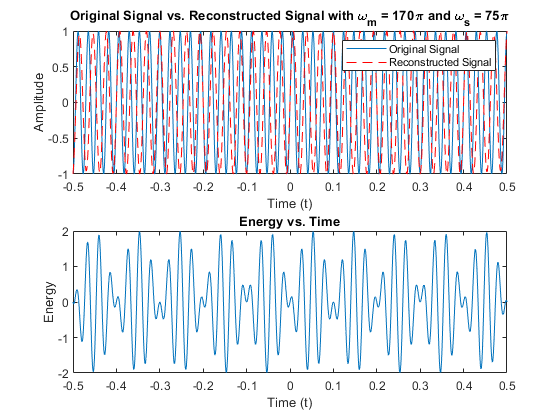

ECE 316 Project #1 Question #3
Contents
Code to Reconstruct 3 Different Signals
Ts = 1/75;
Tc = 1/10000;
tmax = 0.5;
tmin = -0.5;
tsum = tmax-tmin;
t = (tmin:Tc:tmax);
t1 = (tmin:Ts:tmax);
fig = 1;
for j = [85,100,110]
wm = j;
OriginalSignal = sin(wm*pi*t);
SampledSignal = sin(wm*pi*t1);
ReconstructedSignal = zeros(1,(tsum/Tc)+1);
for i = 1:1:1/Ts+1
ReconstructedSignal = ReconstructedSignal + SampledSignal(i)*sinc((1/Ts)*((tmin:Tc:tmax)-(i-((0.5/Ts)+1))/(1/Ts)));
end
Energy = OriginalSignal-ReconstructedSignal;
figure(fig)
subplot(2,1,1);
plot(t,OriginalSignal);
hold on;
plot(t,ReconstructedSignal,'--r');
hold off;
xlabel("Time (t)");
ylabel("Amplitude");
title(strcat("Original Signal vs. Reconstructed Signal with \omega_{m} = ",num2str(2*wm),"\pi and \omega_{s} = ",num2str(1/Ts),"\pi"));
legend({'Original Signal','Reconstructed Signal'});
subplot(2,1,2);
plot(t,Energy);
title("Energy vs. Time")
xlabel("Time (t)");
ylabel("Energy");
fig = fig+1;
end
